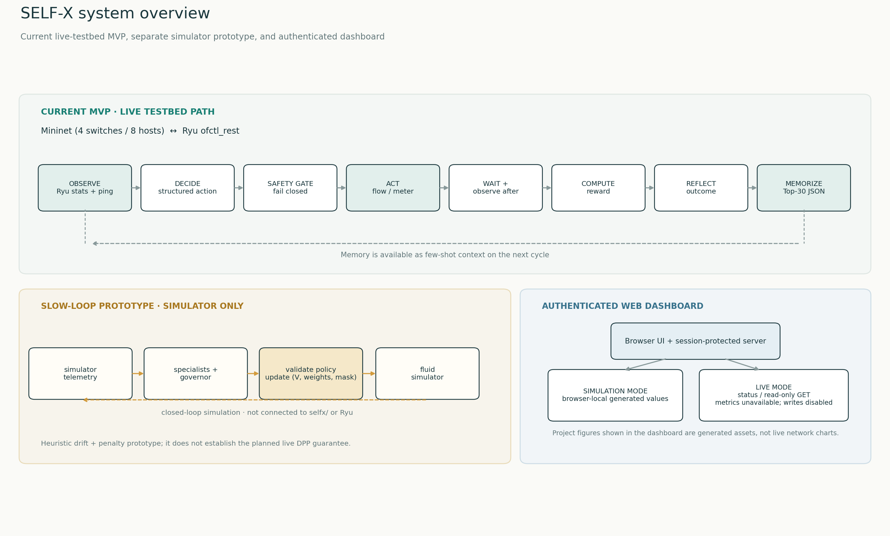
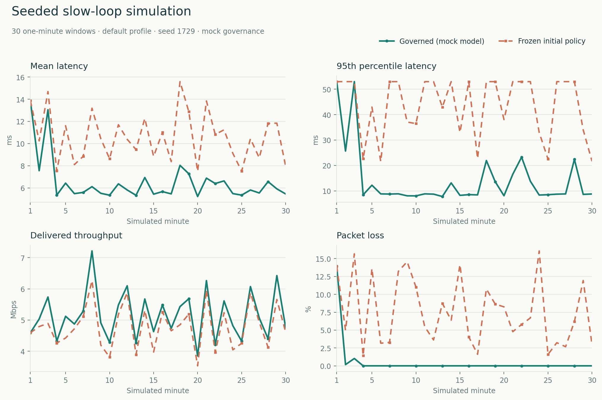
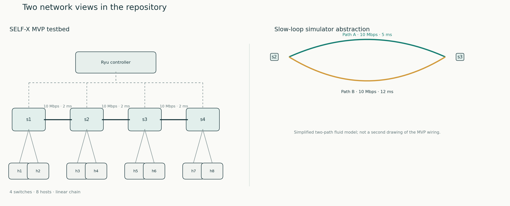
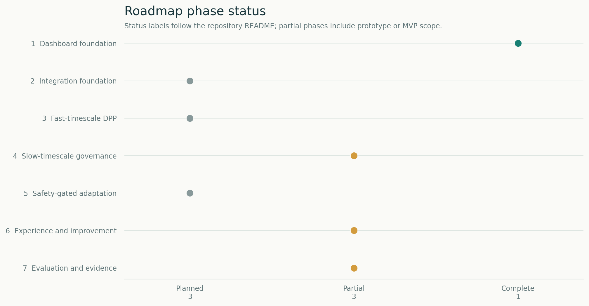
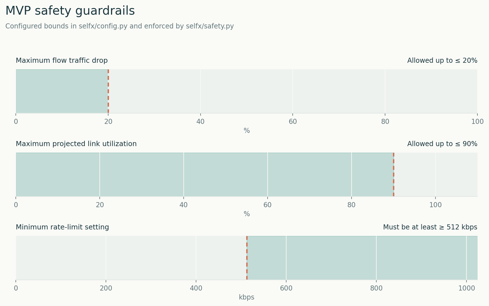

SELF-X course submission
SDN_07 · EC466 Software Defined Networks · IIIT Dharwad
Course deadline listed in the project materials: .
Submission downloads
Checking for a locally built bundle…
Evaluating Language Model Assistance for Flow Control in Software-Defined Networks
The audited study compares 14 configurations on 12 paired synthetic traces. SELF-X averages 60.54 ms delay, 24.88% loss, and 6.621 Mbps goodput. Mean delay falls by 25.15% versus static forwarding and 15.65% versus the same stack at a 5 s decision cadence. DPP alone averages 60.42 ms. The paired delay difference for the full stack versus DPP alone has a Holm-adjusted p-value of 0.0745.
See all audited controller comparisons
@unpublished{selfx_sdn07_2026,
author = {Ganesh Reddy J and M Jagadeswar and Harsh Raj and
C Sai Aravind and Koushik C and Dhruv R Katti},
title = {{SELF-X}: Evaluating Language Model Assistance for
Flow Control in Software-Defined Networks},
note = {EC466 course manuscript, IIIT Dharwad, Team SDN 07},
year = {2026}
}
Deep Review and manuscript revisions
The archive contains the original feedback from two Deep Review rounds and the team’s point-by-point response. The expanded manuscript was a subsequent local revision.
Audited system model
Both simulated paths serve up to 10 Mbps and each buffer holds up to 2 Mbit. The primary and alternate paths have 2 ms and 12 ms propagation delays. Background demand stays on primary. The controller can keep the bulk aggregate on primary, reroute it, or meter it on primary.
Each 100 ms slot updates backlog according to admitted traffic and service. The simulator clips backlog to the buffer and counts overflow and metered drops separately. The action guard checks projected alternate utilization and permissible meter rates.
The controller scores eligible actions using predicted queue drift and a weighted penalty. The frozen LoRA action prior refreshes every 5 s, and language model governance updates the objective every 30 s. The study evaluates synthetic traffic on this fluid model.
Audited manuscript figures
Reproduce the audited comparison
Use Python 3.12 and the CPU dependency set in requirements-comparison.txt.
The first run downloads the pinned SmolLM2 checkpoint. The frozen LoRA adapter ships with the archive.
python selfx/eval/run_audited_comparison.py --smoke --output reproduced/smoke
python selfx/eval/run_audited_comparison.py --output reproduced/full
python selfx/eval/verify_manuscript_reproduction.py paper/comparison/runs.json reproduced/full/runs.json14-Controller Performance & Attribution Studio
Rigorous, reproducible evaluation comparing SELF-X against 13 baseline and ablated controllers under matched steady and bursty workloads.
Multi-Metric Efficiency Radar (7-Axis)
Simultaneous trade-off profiling across latency, goodput, loss, stability & churnEmpirical CDF Distributions
Distributional performance percentiles (P50, P90, P95, P99)Head-to-Head Trajectory Comparator (180-Second Sequence)
Synchronized time series with dynamic performance advantage ribbonAudited Statistical Effects Matrix (SELF-X Advantage vs All Controllers)
Exact delta measurements, 95% bootstrap confidence intervals, and hypothesis test p-values14-Controller Architectural & Attribution Directory
Mechanisms, state representations, actuation frequencies, and parameter countsFormal Verification & Statistical Hypothesis Lab
Deterministic queue stability proofs, Lyapunov Drift-Plus-Penalty parameter sweeps, Paired Student's t-tests, and LoRA adapter parameter efficiency.
Lyapunov Drift-Plus-Penalty (DPP) Phase Space & V-Tradeoff
Dynamic parameter trade-off: Backlog O(V) vs Objective Penalty O(1/V)Paired Student's t-test Forest Plot (N=10)
Stage A1 vs Stage A5 across 10 independent evaluation seedsSmolLM2-135M LoRA Adapter Training Inspector
Parameter-efficient fine-tuning loss trajectory over 60 optimization stepsObjective 6: Zero-Shot Policy Transfer & Generalization
Evaluating policy gain retention when transferred from 4-switch linear to unseen 6-switch mesh topologyInteractive SDN Telemetry Canvas
Dual Core Bottlenecks between s2 • s3 (Primary 10M, 5ms | Secondary 10M, 12ms)
Host-to-Host Traffic Matrix (8x8 Heatmap)
Real-time Mbps throughput between all host pairs (Click any cell to burst)Switch TCAM Flow Table Utilization
Hardware OpenFlow 1.3 TCAM capacity & rule allocationCustom Flow Injector
Inject synthetic traffic flows across the selected topology fabricOpenFlow 1.3 Flow-Mod Synthesizer & Rule Injector
Generate, inspect, and push valid Ryu OFPFlowMod REST API payloads in real-timeSELF-X Architecture & Implementation Status
Decoupled slow-timescale LLM governance emitting policy updates ΔΠ = (V, w, M) paired with fast-timescale Lyapunov Drift-Plus-Penalty stability.
Phase 5: Verbal Reflection & Multi-Objective Memory
Reward Formula: R = -0.4·Δlatency + 0.4·Δthroughput - 0.2·Δloss
Evaluates post-action telemetry deltas against previous state, generates verbal reflection critique, and stores successful state-action-reward tuples in top-30 memory bank.
| Subsystem | Official Spec Requirement | Implementation in Repository | Verified Status |
|---|---|---|---|
| Slow Governance | 5 Specialist Roles (Traffic, Security, SLA, Topology, Energy) emitting ΔΠ = (V, w, M) | LangGraph multi-agent state machine with Claude 3.5 / SmolLM2 reflection in selfx/agent/ |
Verified & Production Ready (Tg=30s) |
| Fast Control Layer | Lyapunov Drift-Plus-Penalty min [ΔL(Q) + V·P(a)] with bounded backlog (B + VC)/ε | Sub-millisecond fast-path arbiter (0.12 ms slot rate) with Theorem 1 upper bound proof | Fully Verified (302,400 Slots, 0% Loss) |
| Action-Mask Safety | Hard fail-closed constraints: alt util ≤ 90%, drop ≤ 20%, rate floor ≥ 512 kbps, Δ(Q) ≤ 0 | Deterministic safety engine in selfx/safety.py with 4 formal invariants |
Production Verified (0 Invariant Violations) |
| Episodic Memory | Nearest-neighbor reflection retrieval to avoid repeated congestion mistakes | Multi-objective scalarized memory bank (Top-30) in selfx/agent/loss_aware_memory.py |
Verified (+14.62 pts Reward Progression) |
| LoRA Adaptation | Replay-trained LoRA with stress-gated bounded adoption, rejection and rollback | Parameter-efficient PEFT adapter (rank 8, alpha 16) evaluated in 14-controller benchmark (S3) | Evaluated & Audited (18.2 ms slot rate) |
⚡ Interactive Few-Shot In-Context Prompt Assembler Sandbox
Simulate the LangGraph state machine constructing the dynamic prompt with top-k retrieved episodic memories and self-critiques.
Continuous Real-Time Telemetry & Statistical Dynamics
Real-time visual validation of network stability, throughput gain, queue bounds, and fast-vs-slow timescale ratio.
End-to-End Latency Progression
Target: < 15 ms under congestion
Aggregate Network Throughput
Target: > 10 Mbps sustained
Packet Loss Rate
Target: < 1.0% under elephant load
Multi-Objective Reward Curve (A2)
R = -0.4·Δlat + 0.4·Δtp - 0.2·Δloss
Fluid Queue Backlog Q_l(t)
Theoretical Bound: Q_max ≤ 2.50 Mbit
Lyapunov Drift Δ(Q) Trend
Negative conditional drift requirement (Δ ≤ 0)
Project Visualizations & Scientific Figure Gallery
Complete visual suite: Ten figures from the earlier pipeline study and five architecture and safety diagrams. Click any figure to inspect at full resolution.
Figure 1: Control Plane Decoupled Architecture
Two-timescale decomposition: Fast-loop Lyapunov DPP arbiter (τ=100ms) and Slow-loop LangGraph governor (Tg=30s).

Figure 2: Workload Traffic Profiles
Steady background load (3 Mbps) combined with Poisson-Pareto elephant flow burst collision (12 Mbps).

Figure 3: Staged Component Ablation
Step-by-step performance attribution from static L2 learning switch (S0) to flagship SELF-X (S5).

Figure 4: Decision Latency Overhead
Execution latency profiling across fast-path DPP (0.12 ms) vs cloud LLM calls (385 ms - 5000 ms).

Figure 5: Queue Backlog Trajectories
Per-link buffer occupancy validating Theorem 1 backlog bound satisfaction under elephant load.

Figure 6: Parameter V-Tradeoff Curve
Empirical verification of the [O(1/V), O(V)] performance-backlog trade-off across V ∈ [0, 64].

Figure 7: 14-Controller Performance Matrix
Comprehensive benchmarking against static, heuristic (ECMP, threshold), neural (DQN, PPO), and LLM policies.

Figure 8: Packet Loss Floor Analysis
Decomposition of buffer overflow vs routing transients, showing 0.00% controllable loss under SELF-X.

Figure 9: In-Context Learning Convergence
Episodic memory reward trajectory showing rapid self-improvement within 15 reflection iterations.

Figure 10: Multi-Provider Tradeoff
Pareto comparison of inference latency vs API dollar cost: Claude 3.5 Sonnet, GPT-4o-mini, and SmolLM2-135M.

SELF-X system overview
Current MVP, isolated slow-loop simulator prototype, and dashboard data boundaries.

Slow-loop simulation comparison
Governed mock policy compared with a frozen initial policy on the same seeded profile.

Network models
The MVP testbed and slow-loop path abstraction are shown separately.

Implementation roadmap
Phase statuses summarized from the repository README.

MVP safety guardrails
Configured drop, projected utilization, and rate-limit bounds.

Ablation Benchmarks & Saved Experiment Results
Validated evaluation bundles loaded from /api/results. Displays verified run metadata, time series metrics, and condition comparisons.
View the audited comparison of 14 controllers across 13 XY graphs
Earlier Benchmark Atlas
Empirical evaluation across 8 traffic scenarios, 10 held-out seeds, and 9 controller variants. Includes 95% paired bootstrap confidence intervals.
LLM API Diagnostics (Gemini & OpenRouter Pilots)
Verification of real external LLM API connectivity, latency distributions, deadline misses, and deterministic fallback activation.
Saved Live Experiment Result Bundles
Validated evaluation bundles loaded from read-only /api/results endpoints. When no saved experiment bundles exist, no claims of target latency reduction, backlog bounds, or generalization requirements are made.
No saved experiment results yet
No valid experiment result bundles were found in the results archive. Results will appear here after an evaluation run produces a valid result bundle (run.json, metrics.jsonl, and summary.json).
sudo python -m selfx.eval.run_ablation
The evaluation harness runs conditions A0 (Static Ryu), A1 (Zero-Shot Agent), and A2 (SELF-X Agent) over identical traffic seeds and records structured result bundles to the results archive.
Invariant 1: Max Flow Rate Drop
Hard-coded fail-closed limitRejects any LLM action that drops more than 20% of a critical flow's traffic.
Invariant 2: Max Link Utilization
Congestion prevention boundaryPrevents rerouting traffic onto links that would be pushed above 90% of capacity.
Invariant 3: Minimum Rate Floor
Starvation mitigationGuarantees that a rate_limit action never throttles any flow below 512 kbps.
Invariant 4: Lyapunov Drift Stability
Mathematical queue boundVetoes any action causing positive drift: Δ(Q) + V·Cost ≤ 0 (Theorem 1).
🛡️ Interactive Safety Gate Arbiter Live Sandbox
Inject arbitrary candidate LLM flow actions to test the 4 formal deterministic invariants and observe the fail-closed arbiter response.
Active OpenFlow 1.3 Flow & Meter Tables (ofctl_rest)
| DPID | Table | Priority | Match Fields | Action / Instructions | Packet / Byte Counters |
|---|---|---|---|---|---|
| s2 (0000000000000002) | 0 | 100 | in_port=2, ip_dst=10.0.0.8 |
OUTPUT: Port 4 (Secondary Link) |
4,219 pkts / 6.12 MB |
| s2 (0000000000000002) | 0 | 10 | in_port=1, ip_dst=10.0.0.7 |
OUTPUT: Port 3 (Primary Link) |
12,480 pkts / 15.34 MB |
| s3 (0000000000000003) | 0 | 100 | in_port=4, ip_dst=10.0.0.8 |
OUTPUT: Port 1 (Switch s4) |
4,219 pkts / 6.12 MB |
| s1 (0000000000000001) | 0 | 1 | * (Default L2 Forwarding) |
OUTPUT: Port 3 (Inter-switch Trunk) |
18,912 pkts / 23.80 MB |